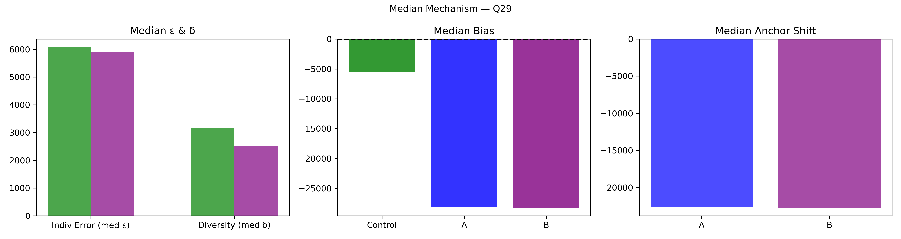

Question Q29: What will the diff. in subscribers be for Ed Sheeran's YouTube channel be between Saturday & Sunday?
Super Summary
================================================================================
QUESTION Q29: 04_Export_0703_stats_Pp54pLpHXH.csv
What will the diff. in subscribers be for Ed Sheeran's YouTube channel be between Saturday & Sunday?
Truth = 28210.0
N_ctrl = 152 N_ext = 77
================================================================================
[1] COLLECTIVE ERROR (E)
Control Ec: 14209.7792 ± 12669.5458
CI = [ 1446.8010 , 47054.0523 ]
Extremized Ex: 7898.4727 ± 1033.3553
CI = [ 6045.2471 , 9934.8984 ]
Difference (Ec - Ex) = 6311.3065
Percent Change = 44.42%
Bootstrap:
P(Ex < Ec) = 0.5670
→ 56.7% of samples show extremized < control
[2] INDIVIDUAL ERROR (ε)
Control mean ε = 23601.3553
Extremized ε = 8647.0000
Percent Change = -63.36%
Welch t-test: t = 1.149, p = 0.2524
Cohen's d = 0.114
[3] DIVERSITY (δ)
Control SD = 161115.8714
Extremized SD = 9049.5560
Percent Change = -94.38%
Levene p = 0.405
[4] ANCHOR DIAGNOSTICS
Anchor A = 20929.0
Anchor B = 29287.0
A_effective = False
B_effective = True
[5] EQUATION 6 CHECK
w_L = 1.2862 w_H = 1.7904
Delta = 8945.5326
Criterion_L = False Criterion_H = True
Meets both = False
[6] δ–ε–E SCENARIO
Scenario: δ:down, ε:down, E:down
Mechanism Explanation: Calibration: anchors pull predictions inward toward the truth, reducing both individual error and diversity and improving collective accuracy.
================================================================================
FINAL INTERPRETATION (with actual figures)
================================================================================
For Q29, collective error shifted from 14209.78 to 7898.47 (44.42%). Bootstrap = 56.7%. Individual error changed by -63.36%, diversity changed by -94.38%. Scenario = δ:down, ε:down, E:down. Equation 6 feasibility = False.
================================================================================
Median Mechanism Plot
